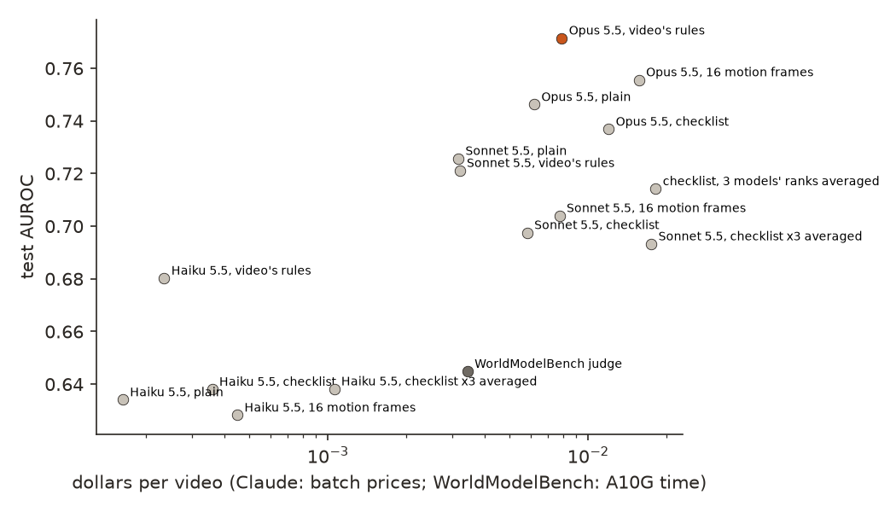
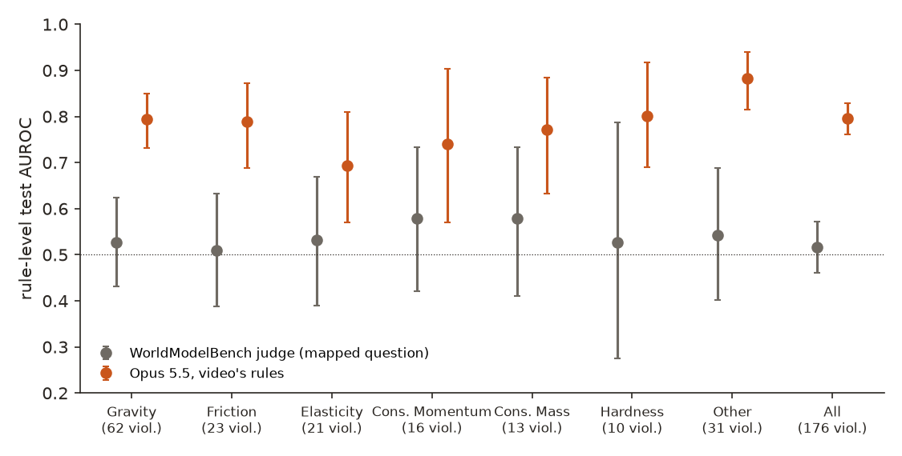
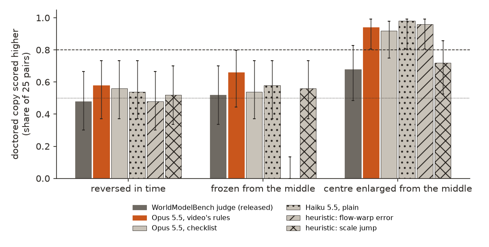

← Research·Experiments·
Claude Opus shown eight frames beats both released physics judges on VideoPhy-2’s human labels, and no judge notices a clip played backwards
Video generators are now pitched as world simulators, and the usual way to check their physics is a small model fine-tuned to judge it. This note scores two released physics judges and a general model shown eight frames on the same 406 human-rated videos, and on clips doctored to break physics on purpose.
Summary: the short answer and the key results
In short
Can a cheap, general model judge physics in generated video as well as the judges built for it?
On VideoPhy-2’s human labels, yes, and better. WorldModelBench’s 67,000 human labels are not public, so both released judges were scored on VideoPhy-2’s instead: 406 test videos from six generators, rated by three annotators each. Claude Opus 5.5, shown eight frames, the prompt and the video’s physical rules, ranked the videos people called implausible above the rest with AUROC 0.771. VideoPhy-2’s own fine-tuned judge, AutoEval, reached 0.699 and WorldModelBench’s fine-tuned judge 0.645; paired over prompts, Opus beat both, as the pre-registration required. With the frames removed Opus fell to 0.614, so it is reading the video, not the rule text. But on 25 clips doctored to break physics, every judge noticed the centre of the picture suddenly growing, and none noticed a clip played backwards or frozen halfway: they scored those about the same as the originals. A judge used as a reward for physics would let a generator learn exactly those mistakes.
Key results
| What we tested | Result | Compared with |
|---|---|---|
| Does the cheap judge chosen on dev rank the videos people called implausible above the rest? (406 test videos, 270 prompts) | Opus 5.5 with the video’s rules: AUROC 0.771 [0.723, 0.818], about $0.008 a video at batch prices | WorldModelBench’s judge 0.645 [0.590, 0.696]; VideoPhy-2’s AutoEval 0.699 [0.651, 0.745]. The annotators’ own rule marks, scored the same way: 0.800 |
| Does it beat the released judges, paired over prompts? (pre-registered) | Beats WorldModelBench’s judge by +0.127 [+0.075, +0.182] and AutoEval by +0.072 [+0.024, +0.120] | AutoEval minus WorldModelBench: +0.055 [+0.005, +0.108] |
| Is it reading the frames or the rule text? (post-hoc control) | The frames: the same ask with no frames scores 0.614; the frames add +0.158 [+0.095, +0.217] | A bag of words on the rule text alone: 0.635; on the prompt alone: 0.555 |
| Which model, which prompt? | The model matters more than the prompt. Opus 0.737 to 0.771 across four prompts, Sonnet 0.698 to 0.726, Haiku 0.628 to 0.680. Asking three times and averaging adds nothing (Sonnet 0.693 against 0.698) | The six motion heuristics combined: 0.623; the best single one (flow divergence) 0.637 |
| Per kind of law (rule level, 1,089 rules, 176 violated) | Opus with the rules: 0.796 [0.761, 0.829] over all rules; 0.69 to 0.88 per law group | WorldModelBench’s matching question: 0.516 [0.461, 0.573], chance; Opus ahead by +0.280 [+0.221, +0.340] |
| Doctored clips with a known answer (25 clean clips, three copies each) | Every Claude judge notices the centre of the picture suddenly growing (Opus with the rules: 23.5 of 25). No judge notices a clip played backwards (10.5 to 15.5 of 25, chance is 12.5), and none passes on a clip frozen halfway (Opus 16.5) | WorldModelBench’s judge passes none (12, 13 and 17 of 25). A frame-difference spike catches the frozen clip (24 of 25) |
01Introduction
A model is asked for a video of a hockey player knocked onto the ice. Play the result backwards and the player rises from the ice into a standing skater, a thing no real body does. Shown eight frames of the reversed clip, Claude Opus 5.5 said it broke physics with probability 0.78; shown the clip played forwards, 0.75. It could not tell which way time ran. The same judge, on 406 generated videos people had rated, sorted the implausible ones from the plausible ones better than the two judges trained for the job. Both facts are in this note, and both matter for anyone who wants to use a judge to grade, or to train, a video model’s physics.
What is known. Video generators such as Wan, HunyuanVideo, Cosmos and Ray2 are increasingly described as “world models”, and benchmarks now test whether their output obeys physics. WorldModelBench collected 67,000 human labels on physics adherence and instruction following and released a judge fine-tuned on them, which its authors report predicts those labels better than GPT-4o. VideoPhy-2 rated about 3,900 generated videos for physical commonsense, wrote physical rules for each, and released a 7-billion-parameter judge, AutoEval, with its predictions on the test set. The sibling note on image-to-video models found that cheap video scores can be fooled by a clip in which nothing happens.
What is missing. WorldModelBench’s human labels are not public (its repository keeps the test answers private), so its judge cannot be checked on its own labels by anyone outside. No one has scored the two released judges side by side on the same human labels, against a general model that was never fine-tuned for physics, or on clips with a known answer.
On VideoPhy-2’s human labels, does a cheap general model shown a few frames catch physics violations in generated video as well as the released, fine-tuned judges, and do any of them catch a violation planted on purpose?
What this note does. Its contributions:
- A measurement: WorldModelBench’s judge, VideoPhy-2’s AutoEval, Claude Opus, Sonnet and Haiku 5.5 under four prompts, and six motion heuristics, all on the same 406 test videos, with intervals that resample whole prompts.
- A pre-registered head-to-head: one cheap judge chosen on separate dev prompts, tested against both released judges with a paired interval.
- Known-answer checks: every judge against three doctored copies (reversed, frozen, centre enlarged) of 25 clips people rated as perfectly plausible.
- A control for the boring explanation: the same judge with the frames removed, to measure how much the benchmark’s rule text gives away.
What would count as an answer. Set in the pre-registration before any judge ran:
- The metric is test AUROC for “people did not rate the video as likely to follow physical commonsense” (VideoPhy-2’s own pass mark: PC below 4), on all 406 test videos.
- One cheap judge is chosen on the 194 dev videos alone; only it is tested against the bar.
- It “beats” a released judge only if the paired AUROC difference, bootstrapped over prompts, has a 95% interval above zero.
- A judge “passes” a doctored kind if it scores the doctored copy above the clean one in at least 20 of 25 pairs.
02Setup
2.1 Judging physics in video, for software engineers
- A generated video breaks physics when something happens that the real world does not allow: a ball hangs in the air, a hand passes through a cup, a hose changes shape for no reason, water pours upward. It is a different question from “does it look good” or “does it match the prompt”: a sharp, faithful video can still break physics.
- VideoPhy-2’s human rating. Three annotators watched each video and rated how likely it is to follow physical commonsense, from 1 (very unlikely) to 5 (very likely). Only the rounded mean is released. Here, PC below 4 counts as a violation, the same pass mark VideoPhy-2 uses: 215 of the 406 test videos.
- Rules. Each video also comes with two to four short physical rules (“The hose maintains its spiral shape.”), each marked followed, violated or cannot be determined by the annotators. Each rule has a law (Gravity, Friction, Conservation of Mass…).
- A judge outputs a score, higher meaning “more likely to break physics”: a probability for the fine-tuned judges, a 0-100 answer for Claude, a number from optical flow for the heuristics.
- Optical flow estimates, for every pixel, where it moved between two frames. The heuristics read it for signs of trouble: sudden jumps, stretching, content that appears from nowhere.
2.2 AUROC by hand, on six videos
AUROC asks one question about a judge: pick one video people called implausible and one they called plausible; how often does the judge give the implausible one the higher score? Three of each:
| Implausible video | Judge’s score | Beats which plausible videos (scores 50, 20, 10)? | Wins |
|---|---|---|---|
| A | 80 | all three | 3 |
| B | 60 | all three | 3 |
| C | 30 | 20 and 10, not 50 | 2 |
| All 9 pairs | 8 / 9 = 0.89 |
A judge that guesses scores 0.5; a perfect one 1.0. AUROC ignores where the judge draws its yes/no line, so judges that answer on different scales (a probability, a 0-100 guess, a pixel count) can be compared on the same footing. Accuracy at a threshold is reported too, with the threshold fixed on dev.
2.3 The data
| Set | What it is | Size | Used for |
|---|---|---|---|
| Dev (items.csv) | VideoPhy-2 test videos from six generators (CogVideoX-5B, Cosmos, HunyuanVideo, Luma Ray2, VideoCrafter2, Wan2.1), 100 each, seed 20261114; prompts split so none is on both sides | 134 prompts, 194 videos | Choosing the cheap judge, thresholds, the effort setting, the combined heuristic’s weights |
| Test | The same draw, the other prompts | 270 prompts, 406 videos (215 violations), 1,089 rules (176 violated) | Every headline number |
| Known-answer clips (traps.csv) | 25 other test videos rated PC 5 with no rule violated, whose prompt has something falling, thrown, poured or bouncing; each with three doctored copies, all four re-encoded the same way | 100 clips | Section 4.5 |
The doctored copies: reversed (frames in reverse order: things fall up), frozen (the clip plays to its middle frame and holds it: a falling object stops), resized (from the middle frame on, the central half of the picture is enlarged 35% in place: whatever is in the middle suddenly grows). Sora’s 60 test videos were left out so each generator has 100.
2.4 The judges
- WorldModelBench’s judge (vila-ewm-qwen2-1.5b), run on Modal with VILA at the commit of its release. It is asked its own five physics questions (Newton’s law, conservation of mass and deformation, fluids, penetration, gravity) with the prompt template from its evaluation script, on 16 frames. Score per question: P(Yes) / (P(Yes) + P(No)) on the first answer token; video score: the largest of the five. Its official yes/no reading is reported beside it.
- VideoPhy-2 AutoEval: its released predicted PC for every test video, turned into a score as 6 − predicted PC. AutoEval was trained on VideoPhy-2’s training split, whose prompts do not overlap the test, but it has seen the same generators and the same annotators’ standard, which favours it here.
- Claude (Opus 5.5, Sonnet 5.5, Haiku 5.5): 8 frames spread over the clip (16 for the motion prompt), 512 pixels on the long side, each labelled with its time, plus the prompt the video was made from. Four prompts: plain (one question, 0-100), checklist (eight violation types answered one by one, then 0-100), motion (the checklist on 16 frames, half of them at the largest changes in motion), rules (the video’s own rules, each followed / violated / cannot tell with a 0-100, then 0-100 overall). Adaptive thinking at medium effort, fixed on a 10-video pilot; structured JSON replies; Message Batches.
- Heuristics (no model): mean motion, motion jerk, frame-difference spike, scale jump, flow divergence and flow-warp error, from Farneback optical flow on up to 48 frames; each alone, and a logistic regression of all six fitted on dev.
- Ensembles: the checklist asked three times and averaged (Sonnet, Haiku); the three models’ checklist ranks averaged; the chosen judge plus the heuristics in one regression fitted on dev.
A reference, not a rater. VideoPhy-2 releases only the mean of three ratings, so the agreement of one annotator with the others cannot be computed. As a stand-in, the annotators’ own rule marks (the number of rules they marked violated, plus the extra violations they wrote down) are scored against their PC rating like a judge. This is the same people’s other answer, not an independent rater, and it is labelled that way throughout.
03How the study was run
- Question and design from a survey of world-model benchmarks: WorldModelBench’s labels are private, so VideoPhy-2’s public labels are the ground truth.
- Sample and known-answer clips drawn (1_sample.py, 2_traps.py): 600 videos, 25 clean sources, 75 doctored copies.
- Pre-registration committed before any judge ran: metric, splits, selection rule, the “beats” test, the trap pass mark, the budget.
- Heuristics on 700 clips (3_heuristics.py).
- Effort pilot: each model at low and medium effort on 10 dev videos; medium fixed for all.
- Claude: 12 model-prompt pairs on 600 videos, the checklist twice more for Sonnet and Haiku, 12 pairs on the 100 known-answer clips: 9,600 batched calls, no reply that failed to parse.
- WorldModelBench’s judge on one A10G: 700 clips, five questions each.
- Selection on dev, committed before any test score was read: Opus with the rules (dev AUROC 0.783; Opus plain 0.779, Opus checklist 0.761).
- Text-only control (amendment 1, post hoc): Opus with no frames, rules and plain asks, 1,200 calls.
- Analysis (6_analyse.py): AUROC with 2,000 bootstrap draws over prompts, paired differences, rule-level AUROC per law group, the known-answer shares with Wilson intervals.
| Fixed before any judge ran | Changed after reading replies |
|---|---|
| The sample, the dev/test split by prompt, the label (PC < 4), AUROC as the primary metric, bootstrap over prompts; the judges, the four Claude prompts, the frame counts, WorldModelBench’s questions and score; the selection rule (best dev AUROC, ties to the cheaper); the paired “beats” test; the three doctored kinds and the 20-of-25 pass mark; the budget | One effort setting (medium) chosen on the 10-video pilot, as the pre-registration allowed. After the selection and a first look at test scores, VideoPhy-2’s rules turned out to be written per video, not per prompt, and a bag of words on them predicted the label (0.635), so a text-only control was added (amendment 1). It is reported as a control and does not change any pre-registered verdict. |
Conditions: Claude through the Message Batches API at half the list price, adaptive thinking at medium effort, structured output; WorldModelBench’s judge greedy, bfloat16, one A10G on Modal, 8 to 13 seconds a video. Spend: Anthropic $55.40 at batch prices from logged tokens (Opus $32.88, Sonnet $21.24, Haiku $1.28), Modal $3.45 billed, cover about $0.50; under the $80 and $20 caps.
04Results
Six findings:
- 4.1 Opus 5.5 with the video’s rules beats both released judges.
- 4.2 The judge reads the frames, not the rule text.
- 4.3 A bigger model helps; a cleverer prompt, more samples or more frames barely do.
- 4.4 Per law, the rules judge is above chance everywhere; WorldModelBench’s matching question is not.
- 4.5 The judges see something grow; none sees time run backwards.
- 4.6 Some of the judge’s “false alarms” are label noise.
4.1 Opus 5.5 with the video’s rules beats both released judges
On the 406 test videos, Opus 5.5 given the video’s rules reaches AUROC 0.771 [0.723, 0.818]. VideoPhy-2’s AutoEval reaches 0.699 [0.651, 0.745] and WorldModelBench’s judge 0.645 [0.590, 0.696]. Paired over prompts, Opus beats AutoEval by +0.072 [+0.024, +0.120] and WorldModelBench’s judge by +0.127 [+0.075, +0.182]. Figure 1 shows every judge.

WorldModelBench’s judge, asked its own five questions, ranks the videos above chance but below the others: 0.645 with its largest probability, 0.653 with the mean of the five, 0.604 with its official yes/no reading (the number of questions answered “Yes”). Its answers lean on two questions: it says “Yes” to deformation on 44% of test videos and to penetration on 25%, but to Newton’s law on 0.2% and to gravity on 2.5%. AutoEval, trained on VideoPhy-2’s other split, beats it by +0.055 [+0.005, +0.108].
The annotators’ own rule marks reach 0.800 [0.761, 0.837]. That is not a ceiling one more rater would reach (it is the same three people describing the same viewing twice), but it shows how much of the rating a careful reading of the rules explains, and Opus is 0.03 below it. At the threshold fixed on dev, Opus with the rules is right on 68.0% of test videos (F1 0.661), AutoEval on 66.3%, WorldModelBench’s judge on 61.6%.
Per generator, Opus beats AutoEval on four of six (Wan 0.848 against 0.635, VideoCrafter2 0.868 against 0.723, HunyuanVideo 0.743 against 0.604, CogVideoX 0.777 against 0.739), is level on Ray2 (0.752 against 0.766) and behind on Cosmos (0.622 against 0.751), with 63 to 71 videos each (metrics_per_model.csv). WorldModelBench’s judge ranges from 0.538 (HunyuanVideo) to 0.748 (VideoCrafter2).
4.2 The judge reads the frames, not the rule text
VideoPhy-2’s rules are written for each video, not for each prompt: the four videos of one prompt come with four different rule lists, because the rules describe what was generated (“The soccer ball maintains its position on the person’s head”). Rule text can therefore carry a hint of what went wrong. A bag of words on the rules alone, fitted on dev, reaches 0.635 on test; on the prompt alone, 0.555.
Shown the same prompt and rules with no frames, Opus reaches 0.614 [0.562, 0.666]; with the frames, 0.771. Paired, the frames add +0.158 [+0.095, +0.217]. With the plain prompt the gap is the same: 0.586 without frames, 0.746 with (+0.160 [+0.097, +0.223]). The rule text gives a little away, about as much as the bag of words finds, but the judge’s score comes from looking; without frames it falls below AutoEval (−0.086 [−0.145, −0.024]). This check was added after the selection (amendment 1) and is a control, not a candidate.
4.3 A bigger model helps; a cleverer prompt, more samples or more frames barely do
Across the four prompts, Opus scores 0.737 to 0.771, Sonnet 0.698 to 0.726 and Haiku 0.628 to 0.680 on test. The prompt moves a model by at most 0.05; the model moves a prompt by up to 0.12.
| Test AUROC [95% interval] | Opus 5.5 | Sonnet 5.5 | Haiku 5.5 |
|---|---|---|---|
| Plain (one question) | 0.746 [0.696, 0.795] | 0.726 [0.673, 0.775] | 0.634 [0.578, 0.687] |
| Checklist (eight types) | 0.737 [0.686, 0.787] | 0.698 [0.645, 0.750] | 0.638 [0.581, 0.693] |
| Motion (16 frames) | 0.756 [0.705, 0.803] | 0.704 [0.650, 0.756] | 0.628 [0.573, 0.682] |
| The video’s rules | 0.771 [0.723, 0.818] | 0.721 [0.668, 0.771] | 0.680 [0.624, 0.735] |
| Checklist ×3, averaged | – | 0.693 [0.638, 0.747] | 0.638 [0.583, 0.693] |
| Dollars per video (batch) | 0.006 to 0.016 | 0.003 to 0.008 | 0.0002 to 0.0004 |
Three things that often help a judge did not. Averaging three checklist answers left Sonnet at 0.693 and Haiku at 0.638, the same as one answer. Doubling the frames to 16, half of them placed where the motion changes most, moved Opus from 0.737 to 0.756, inside the interval. Averaging the three models’ ranks (0.714) was worse than Opus alone. Adding the six heuristics to the chosen judge, weights fitted on dev, gave 0.753 against 0.771 (paired −0.018 [−0.044, +0.007]).
The heuristics alone are weak. Combined they reach 0.623 [0.568, 0.679]; the best single one, flow divergence (local stretching and squashing), 0.637; mean motion 0.618. Motion jerk and frame-difference spikes point the wrong way (0.44 and 0.47): the videos people rated plausible have more abrupt starts and stops than the implausible ones, many of which drift slowly. Figure 2 sets every judge’s AUROC against its price.

4.4 Per law, the rules judge is above chance everywhere; WorldModelBench’s matching question is not
At the level of single rules, each of Opus’s per-rule probabilities is scored against the annotators’ mark on that rule, and WorldModelBench’s judge is scored by its question that matches the rule’s law (its gravity question for Gravity; its deformation question for Conservation of Mass, Hardness and Elasticity; its Newton question for Momentum and Friction; the largest of the five for Other). Over all 1,089 test rules, Opus reaches 0.796 [0.761, 0.829] and WorldModelBench’s matched question 0.516 [0.461, 0.573], chance; paired, +0.280 [+0.221, +0.340]. Figure 3 splits them by law.

WorldModelBench’s matched question sits at chance in every group (0.51 to 0.58); its gravity question scores gravity rules at 0.528 [0.432, 0.624]. Opus is above it in four of the five groups with at least 15 violated rules, as the pre-registration required: Gravity +0.266 [+0.158, +0.376] (62 violated rules), Friction +0.280 [+0.132, +0.417], Elasticity +0.162 [+0.016, +0.307] and Other +0.340 [+0.165, +0.504]. On Conservation of Momentum (16 violated rules) the interval touches zero (+0.161 [−0.032, +0.351]); Conservation of Mass and Hardness have too few violated rules to test. Opus per group: Gravity 0.794, Friction 0.789, Elasticity 0.694, Momentum 0.741, Mass 0.771, Hardness 0.802, Other 0.883.
4.5 The judges see something grow; none sees time run backwards
Each of 25 clips people rated as perfectly plausible was doctored three ways, and each judge scored all four versions. A judge passes a kind if the doctored copy scores higher than the clean one in at least 20 of the 25 pairs.
Every Claude judge passes on the enlarged centre (22 to 25 of 25; Opus with the rules 23.5). None passes on the reversed clip (10.5 to 15.5 of 25, chance 12.5) or the frozen one (11 to 19.5; Opus with the rules 16.5). WorldModelBench’s judge passes none: 12 of 25 on the reversed clip, 13 on the frozen one, 17 on the enlarged centre; its own gravity question scores the reversed copy higher in 12 of 25 (Figure 4).

The enlargement is a visible event in one frame pair: the middle of the picture jumps closer. Reversal and freezing are not visible in any single frame; they are only wrong given which way time runs and how fast things should fall. The frames Claude saw are labelled with their times, so the order was given, and still its score barely moved. Reading its replies shows why part of the test is weaker than planned: in many of the clean clips the event in the prompt never happens on screen (the candle is never knocked over, the stuffed toy never falls), so playing them backwards breaks nothing visible. On the clips with the most motion the judge still missed it: the hockey fall played backwards scored 0.78 against 0.75 forwards (Clip 3 in the gallery).
The heuristics show the other side of the same coin. A frame-difference spike catches every frozen clip but one (24 of 25) because the picture stops changing at once; mean motion and flow divergence rank the frozen copy below the clean one in all 25 pairs, because less motion reads as more normal to them. No heuristic detects reversal either (12 to 16 of 25): flow is just as large played backwards.
4.6 Some of the judge’s “false alarms” are label noise
Among the test videos rated PC 5, Opus with the rules gave some a score of 80 or more. Watching them, several are plainly broken. In Clip 2 two people spin hula hoops that merge, split, change colour and pass through their bodies; the annotators rated it 5 and marked every rule followed, and Opus gave it 0.93 (with the plain prompt its reason was: “The hoops keep changing shape, number and color, merging and splitting into tangled loops, and passing through the women’s bodies and arms.”). The other direction holds too: Clip 1, a garden hose whose spiral ridges appear and vanish between frames, was rated 2 by the annotators and caught by Opus (0.85), while AutoEval predicted PC 4.
Ratings are the mean of three people, rounded, so a single disagreeing rater can flip a video across the line. Some of the gap between any judge and 1.0 is in the labels, which is one more reason to read the head-to-head numbers as a ranking of judges on these labels rather than as distance from the truth.
05Implications for AI safety
Physics judges are moving from leaderboards into training loops: a judge’s score is a cheap reward for fine-tuning a video model, or a world model used to train robots. A reward model is only as good as the mistakes it can see, and the known-answer checks show a specific blind spot. Every judge here rewards a clip for looking normal frame by frame, and none of them penalises a clip that runs backwards or stops dead. A generator optimised against any of them would be free to learn exactly those failures. The sibling note found the same shape for video quality scores, which preferred a frozen photo to a real clip.
The head-to-head points the other way for evaluation: the released fine-tuned judges were not better than a general model asked carefully, on labels neither was tuned to. Fine-tuning on one benchmark’s labels did not buy reliability on another’s.
Before using any judge as a reward for physical plausibility, score it on doctored clips with a known answer (reversed, frozen, resized), and add a cheap check for the failures it misses.
06What this does not show
- Not WorldModelBench’s own labels. Its human labels are not public. Its judge is scored here on VideoPhy-2’s labels, with its five questions mapped to VideoPhy-2’s notion of physical commonsense; on its own benchmark it may do much better.
- AutoEval has a home advantage: it was trained on VideoPhy-2’s other split, by the same annotators’ standard, on the same generators. Its score is not a fair estimate of how it would do elsewhere.
- No one-rater ceiling. Only the mean of three ratings is released, so “as well as people” can only be judged against the annotators’ rule marks, which are not independent of the rating.
- Frames, not video. Claude saw 8 or 16 still frames; WorldModelBench’s judge saw 16. A judge reading the video at full frame rate might catch reversal and freezing.
- The rules are the benchmark’s, written per video. The chosen judge reads them; on new videos someone (or something) would have to write them. Opus with the plain prompt, which needs no rules, scored 0.746, level with AutoEval (+0.047 [−0.002, +0.094]).
- Six generators, one benchmark, 406 test videos. Intervals resample prompts, so they cover new prompts from the same distribution, not new generators or new kinds of scene.
- The doctored clips are crude, and some clean clips never show the motion the prompt asks for, which weakens the reversal and freezing tests. A judge that passes them can still miss subtler failures.
07Reproduce it
Recompute every number and figure from the saved results, in under a minute on a laptop:
experiments/physics-judge/reproduce.sh --scoresRerun from scratch: an Anthropic API key (about $55 in Message Batches) and a Modal account for WorldModelBench’s judge (one A10G, $3.45 here including a restarted run). The videos (about 0.8 GB) download from VideoPhy-2’s public release:
experiments/physics-judge/reproduce.sh --dry-run # lists every command
experiments/physics-judge/reproduce.shTo judge a new video the same way, build the request with request("rules", "opus", "medium", path, prompt, rules, None) in 4_claude.py and send it with the Anthropic client; or send the file to Judge.judge in modal_wmb.py for WorldModelBench’s five probabilities.
08What’s next
- Give the judges motion they cannot get from stills: frame pairs with the time gap shown, or the clip itself, and test whether reversal and freezing become visible.
- Add the two cheap checks that catch what the judges miss (a frame-difference spike for freezing; a learned arrow-of-time classifier for reversal) and test the combination on held-out clips.
- Collect independent ratings on a few hundred of these videos, to get the one-rater ceiling VideoPhy-2’s release does not allow.
09Questions and answers
How do you check whether a generated video breaks physics?
Ask people, as VideoPhy-2 and WorldModelBench did, or use a judge as a stand-in. On VideoPhy-2’s human ratings of 406 test videos, Claude Opus 5.5 shown eight frames and the video’s physical rules ranked implausible videos above plausible ones with AUROC 0.771, ahead of VideoPhy-2’s own AutoEval (0.699) and WorldModelBench’s released judge (0.645).
Is WorldModelBench’s judge reliable?
Its human labels are not public, so it cannot be checked on them. On VideoPhy-2’s human labels it reached test AUROC 0.645. Its gravity and Newton questions said “Yes” to almost no video (2.5% and 0.2%), its rule-level scores were at chance in every law group, and it scored a doctored clip above its original in 12 to 17 of 25 pairs, passing none of the known-answer checks.
Can an LLM judge catch physics mistakes in AI video?
Partly. It catches visible events well (objects morphing, the centre of the picture suddenly growing: 23.5 of 25 doctored clips), but not mistakes that need the direction or speed of time: a clip played backwards or frozen halfway scored about the same as the original. Asking three times, adding motion heuristics or doubling the frames did not help; a larger model did.
How much does it cost to judge physics in a video with Claude?
With Message Batches, about $0.008 a video for Opus 5.5 with eight 512-pixel frames and the rules prompt, $0.003 for Sonnet 5.5 and $0.0003 for Haiku 5.5; Opus was the most accurate (0.771 against 0.721 and 0.680).
AAppendix: data
Every number comes from a file in results/; README.md describes every column.
items.csv,rules.csv: the sampled videos with their human ratings, AutoEval’s predictions and the split; the rules kept, with law and the annotators’ mark.traps.csv,trap_sources.csv: the 100 known-answer clips and their 25 sources.claude_items.jsonl,claude_traps.jsonl: every Claude reply, parsed, with token counts.wmb_items.jsonl,wmb_traps.jsonl: every WorldModelBench reply and probability.heuristics.csv,heuristics_traps.csv: the six heuristics.scores.csv,metrics_video.csv,selection.json,dev_selection.txt,metrics_per_model.csv: sections 4.1 to 4.3.rule_scores.csv,metrics_rules.csv: section 4.4.trap_scores.csv,traps_result.csv: section 4.5.summary.json,spend.csv: sample sizes, parse failures, every paid call.
The judge’s instructions
In full in 4_claude.py. The system prompt: “You check AI-generated videos for physics mistakes. You see frames sampled from one short generated video, in time order, each labelled with its time, and the text prompt the video was generated from. Judge whether what happens is physically plausible… Judge physics only. Image quality, style, and whether the video matches the prompt do not count… The frames are sparse samples, so judge both what they show and what must have happened between them.” The rules ask lists the video’s rules (in an order fixed by a hash of their text) and asks, for each, “followed”, “violated” or “cannot_tell” with a 0-100 chance, then a 1-5 rating and a 0-100 chance for the video as a whole. WorldModelBench’s prompt is its own: “Watch the video and determine if it shows any ‘<law>’ … Answer with "Yes" or "No".”
Techniques
| Human data | VideoPhy-2 test split: physical-commonsense rating (mean of three, rounded) and per-rule marks |
|---|---|
| Judges | Fine-tuned VLM judges (WorldModelBench’s VILA-based judge, VideoPhy-2 AutoEval 7B); general VLM judge on time-labelled frames with structured output; optical-flow heuristics; logistic-regression stacking fitted on dev |
| Controls | Dev/test split by prompt with selection on dev; text-only judge; doctored known-answer clips; the annotators’ rule marks as a reference |
| Statistics | AUROC; 95% percentile bootstrap over prompts (2,000 draws); paired differences; Wilson intervals |
Tech stack
| Claude | Anthropic Python SDK, Message Batches, adaptive thinking, JSON-schema output; frames with OpenCV |
|---|---|
| WorldModelBench judge | VILA (llava) at commit c8f603b, PyTorch, one A10G on Modal |
| Heuristics and analysis | OpenCV (Farneback flow, RANSAC similarity fits), scikit-learn, SciPy, pandas, matplotlib; ffmpeg |
References
- Bansal et al. “VideoPhy-2: A Challenging Action-Centric Physical Commonsense Evaluation in Video Generation.” arXiv:2503.06800; data at videophysics/videophy2_test.
- Li et al. “WorldModelBench: Judging Video Generation Models As World Models.” arXiv:2502.20694; judge at Efficient-Large-Model/vila-ewm-qwen2-1.5b.
- Farnebäck. “Two-Frame Motion Estimation Based on Polynomial Expansion.” SCIA 2003.
- Sibling note: Judging image-to-video models.
Revision history
- Nov 14, 2026: First published.
How to cite
@misc{lie2026physicsjudge,
author = {Albert Lie},
title = {Claude Opus shown eight frames beats both released physics judges on VideoPhy-2's human labels, and no judge notices a clip played backwards},
year = {2026},
month = nov,
url = {https://albertlieyingadrian.github.io/steerlab/experiments/physics-judge/report/}
}